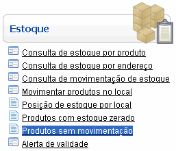
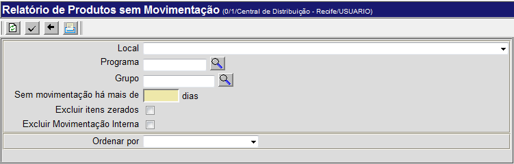
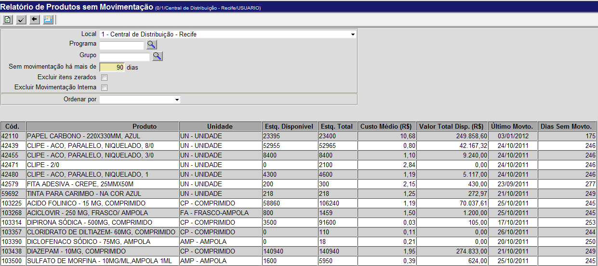

Relatório de Produtos sem Movimentação [ Voltar ]Este formulário permite que o
usuário tenha uma
visão geral dos produtos sem movimentação. Ao gerar o relatório, serão
exibidos
os produtos, de toda a rede ou de um local específico, que não tenham
sido
movimentados (isto é, recebidos ou expedidos) há um
determinado número
de dias. O formulário "Relatório de produtos sem movimentação" encontra-se dentro do menu "Estoque". 
O sistema exibirá a seguinte tela: 
Para gerar uma lista contendo todos os produtos sem movimentação, siga os passos abaixo: 1º Passo: selecione um local para esta consulta. Se este campo for deixado em branco, o relatório incluirá todos os locais da rede. 2° Passo: informe o número de dias que o produto deve estar sem movimentação para constar no relatório. 3º
Passo: clique no botão 
4º
Passo: clique no botão Exemplo de relatório de produtos sem movimentação há 90 dias  para ter acesso
à tela do relatório "Produtos sem movimentação". para ter acesso
à tela do relatório "Produtos sem movimentação".5° Passo: se desejar imprimir o relatório, clique no botão  [Imprimir] do navegador. [Imprimir] do navegador. |